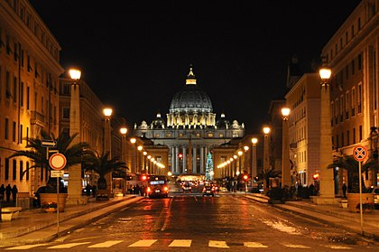

Pilgrimage
Rome has been a major Christian pilgrimage site since the Middle Ages. People from all over the Christian world visit Vatican City, within the city of Rome, the seat of the papacy. The Pope was the most influential figure during the Middle Ages. The city became a major pilgrimage site during the Middle Ages and the focus of struggles between the Papacy and the Holy Roman Empire starting with Charlemagne, who was crowned its first emperor in Rome in 800 by Pope Leo III. Apart from brief periods as an independent city during the Middle Ages, Rome kept its status as Papal capital and "holy city" for centuries, even when the Papacy briefly relocated to Avignon (1309–1377). Catholics believe that the Vatican is the last resting place of St. Peter. Pilgrimages to Rome can involve visits to a large number of sites, both within Vatican City and in Italian territory. A popular stopping point is the Pilate's stairs: these are, according to the Christian tradition, the steps that led up to the praetorium of Pontius Pilate in Jerusalem, which Jesus Christ stood on during his Passion on his way to trial. [103] The stairs were, reputedly, brought to Rome by St. Helena in the 4th Century. For centuries, the Scala Santa has attracted Christian pilgrims who wished to honour the Passion of Jesus. Object of pilgrimage are also several catacombs built in the Roman age, in which Christians prayed, buried their dead and performed worship during periods of persecution, and various national churches (among them San Luigi dei francesi and Santa Maria dell'Anima), or churches associated with individual religious orders, such as the Jesuit Churches of Jesus and Sant'Ignazio. Traditionally, pilgrims in Rome and Roman citizens thanking God for a grace should visit by foot the seven pilgrim churches (Italian: Le sette chiese) in 24 hours. This custom, mandatory for each pilgrim in the Middle Ages, was codified in the 16th century by Saint Philip Neri. The seven churches are the four major Basilicas (St Peter in Vatican, St Paul outside the Walls, St John in Lateran and Santa Maria Maggiore), while the other three are San Lorenzo fuori le mura (a palaeochristian Basilica), Santa Croce in Gerusalemme (a church founded by Helena, the mother of Constantine, which hosts fragments of wood attributed to the holy cross) and San Sebastiano fuori le mura (which lies on the Appian Way and is built above Roman catacombs)..